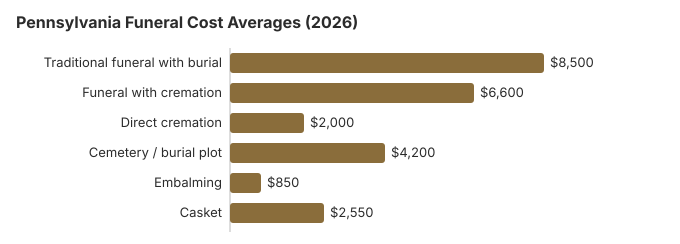

Funeral Costs in Pennsylvania: What Families Pay in 2026
A Pennsylvania funeral is rarely one bill. Our 2026 estimate puts a traditional service with burial at about $8,500, close to the $8,300 national median, a service with cremation near $6,600 and direct cremation near $2,000; 52% of Pennsylvania families now cremate. This page breaks those totals into their parts and covers $20 Pennsylvania death certificates, the $750 state burial payment, veterans cemeteries and the embalming and cremation timing rules.
Pennsylvania Funeral Prices by Line Item
Here are our Pennsylvania item estimates. The State Board of Funeral Directors licenses homes; it does not set their prices.
| Item | Estimate | Common range |
|---|---|---|
| Traditional funeral with burial | $8,500 | $6,375 – $11,050 |
| Funeral with cremation | $6,600 | $5,280 – $8,580 |
| Direct cremation | $2,000 | $1,400 – $2,800 |
| Cemetery / burial plot | $4,200 | $2,100 – $8,400 |
| Embalming | $850 | $500 – $1,500 |
| Casket | $2,550 | $850 – $6,800 |
A caution on these figures: they are Pennsylvania estimates from our model, not prices collected from funeral homes, and not a quote or professional advice. Our method and disclaimer give the details.
State sources: Pennsylvania DHS; 49 Pa. Code §13.204.

Charges to Question on a Pennsylvania Price List
- Embalming called mandatory. After 24 hours Pennsylvania accepts refrigeration or a sealed container instead, so ask which rule the home means.
Help Paying for a Funeral in Pennsylvania
- Pennsylvania DHS pays up to $750 to an enrolled funeral director, and an estate with $1,500 or more in resources is not eligible (55 Pa. Code ch. 283).
- To collect the one-time $255 from Social Security, a Pennsylvania widow, widower or eligible child must call 1-800-772-1213, and the claim has to be made within two years.
- For a Pennsylvania veteran, the person who covered the funeral bill claims the VA allowance on Form 21P-530EZ: up to $1,032 for burial plus $1,032 for a plot when a non-service-connected death falls on or after October 1, 2026. Eligibility rules for Pennsylvania families are in our veteran burial benefits guide.
- Medicaid, charities and other help are covered in our payment assistance guide and the funerals with no money page.
Educational Resources
- Funeral Consumers AllianceIndependent nonprofit consumer advocacy for funeral rights
- FTC Funeral RuleThe federal rule protecting funeral consumers
- Funeral Insurance GuideCompare final expense and burial insurance options
- Best Burial Insurance CompaniesSide-by-side comparison of top burial insurance providers
- Payment Assistance GuideGovernment programs and financial help for funeral costs
- Insurance Plan ComparisonCompare coverage, premiums, and payout speed across providers
Compare Funeral Costs
- Average Funeral Cost in 2026National cost breakdown with real prices
- Cremation vs. Burial Cost ComparisonSide-by-side price comparison to help you decide
- Funeral Cost BreakdownEvery line item explained: know what you're paying for
- Cheapest Funeral OptionsLower-cost alternatives, with typical price ranges
- Direct Cremation: Most Affordable OptionNFDA 2023 median $2,645 with a family-supplied container (latest available)
- How to Compare Funeral PricesStep-by-step guide to getting the best price
Less Expensive Pennsylvania Funerals
| Option | Approx. | Included |
|---|---|---|
| Direct cremation | $2,000 | Cremation with no viewing or service; Pennsylvania requires a 24-hour wait first (49 Pa. Code § 13.212). |
| Direct burial | $4,250 | No embalming or viewing; the Pennsylvania cemetery adds plot and opening fees. |
| Green burial | $4,675 | A shroud or plain casket without embalming, where a Pennsylvania cemetery allows it. |
| Cremation + memorial | $6,600 | Cremation first, memorial afterward |
| Traditional funeral | $8,500 | Viewing, ceremony and burial |
Philadelphia, Pittsburgh and Other Cities
Philadelphia and Pittsburgh run higher than smaller towns; our city estimates:
What Moves Pennsylvania Prices
Pennsylvania's $8,500 traditional estimate sits just above the $8,300 national median, and several local things move individual quotes.
Living costs, how many homes compete in a town, state rules, religious customs and property values all play a part. At 52%, Pennsylvania's cremation rate is high enough that cremation-only providers keep that price competitive.
How Pennsylvania Differs From Its Northeast Neighbors
Pennsylvania's Catholic, Jewish, Greek Orthodox, and Protestant communities each have distinct funeral customs, and Pennsylvania funeral homes generally know these well. If faith tradition matters, asking for a provider that regularly serves your community is usually more useful than asking for "the cheapest": specialized providers in Pennsylvania are often well-priced within their niche because they do volume.
Federal Rights in Pennsylvania
Report a breach of the federal rule at ftc.gov; the Funeral Consumers Alliance advises Pennsylvania families free of charge.
Pennsylvania Cremation and Burial Pages
Each choice in more detail:
Cremation Costs in Pennsylvania
Just over half of Pennsylvania families (52%) cremate. Direct cremation starts near $2,000 and a service with cremation near $6,600; urns and scattering are covered too.
Burial Costs in Pennsylvania
Plot from about $4,200, plus casket, vault, marker and opening: $19,530-$24,030 for a Pennsylvania burial.
Pennsylvania: Burial Versus Cremation
Cremation
- Direct cremation about $2,000
- About $6,600 with a service
- No plot to buy
- Memorial whenever the family wants
- 52% of Pennsylvania families choose it
Traditional Burial
- Traditional funeral about $8,500
- Plot about $4,200
- Most cemeteries require a vault or liner
- A permanent grave
- Metal casket: roughly $2,500 at the national median (NFDA 2023 General Price List Study); Pennsylvania sellers vary
Planning a Pennsylvania Funeral
Followed roughly in this order, these steps avoid the most expensive mistakes in Pennsylvania:
- Settle on burial or cremation: cremation in Pennsylvania or burial in Pennsylvania.
Pennsylvania death certificates: $20 each
The Department of Health charges $20 for every death certificate, however many you order, a fee set under the Administrative Code of 1929 (Pennsylvania Department of Health, death certificates; checked October 29, 2026). Payment is deposited on receipt and is not refunded. State records start in 1906; earlier deaths are at the courthouse of the county where the person died.
- Online: VitalChek, the state's only authorized vendor, adds a $10 service fee per order and takes cards; certificates arrive by first-class mail or can be picked up at a Vital Records office.
- By mail: the application, a copy of valid photo ID and a check or money order payable to "VITAL RECORDS" go to the Division of Vital Records, Death Certificate Processing Unit, PO Box 1528, New Castle, PA 16103. Cash is not accepted.
- In person: Vital Records public offices take the same application and ID.
- Timing: online and mailed orders both take about three weeks.
Applicants must be 18 or older and include the spouse, parents, siblings, children, grandparents, grandchildren and the estate's executor or attorney. Under Act 137 of 2024, the fee is waived, for up to ten copies a year, when the person who died was a veteran or active service member or the spouse of one. Otherwise five copies cost $100, so order only as many as you need.
Pennsylvania's funeral board, DHS burial aid and veterans cemeteries
The Pennsylvania State Board of Funeral Directors licenses funeral homes; call it at 1-833-367-2762 if a home refuses to show prices or applies pressure.
Pennsylvania is not among the nine states on the Funeral Consumers Alliance list that require a funeral director for parts of after-death care, so a family may do much of the work itself as long as someone files the death certificate and obtains the disposition permit.
A cremation in Pennsylvania may not take place until 24 hours after death (49 Pa. Code § 13.212).
The DHS burial payment
The Department of Human Services pays up to $750 toward a burial or cremation for an eligible person, paid to an enrolled funeral director, and an estate with $1,500 or more in resources does not qualify (55 Pa. Code ch. 283). (Source: Pennsylvania DHS.)
Veterans cemeteries in Pennsylvania
Indiantown Gap National Cemetery (717-865-5254), the National Cemetery of the Alleghenies (724-746-4363) and Washington Crossing National Cemetery in Newtown, Bucks County (215-222-7510), are booked through the VA's National Cemetery Scheduling Office (800-535-1117). The state-run Pennsylvania Soldiers' and Sailors' Home Cemetery (814-871-4531) takes requests directly.
Pennsylvania steps
- Get itemized prices from Pennsylvania homes by phone or in person; the FTC Funeral Rule means you pay only for what you choose.
- Weigh a memorial after cremation or burial, which avoids embalming and viewing charges.
- Ask the county assistance office about the $750 DHS payment first, and use a home enrolled with DHS.
- For a veteran, have the home ask about Washington Crossing National Cemetery before you buy a private plot.
- Report a home that hides or ignores its price list to the board at 1-833-367-2762.
Frequently Asked Questions
What does a typical Pennsylvania funeral cost in 2026?
Most Pennsylvania families paying for a full traditional service see the bill settle around $8,500, near the $8,300 national benchmark. Cremation with ceremony runs closer to $6,600, while a stripped-down direct cremation in Pennsylvania can land near $2,000. Cemetery plot fees in Pennsylvania add about $4,200. Actual prices shift a lot depending on which Pennsylvania provider you call first, which is why comparing is non-negotiable.
How much does cremation save in Pennsylvania?
Yes. Direct cremation, about $2,000, comes in some $6,500 under the $8,500 traditional funeral, and about $10,700 under it once roughly $4,200 in cemetery costs is added.
What does the FTC Funeral Rule mean for me in Pennsylvania?
In Pennsylvania, as everywhere in the US, the FTC Funeral Rule requires an itemized General Price List, phone price quotes, and no fee for using a casket bought elsewhere. Pennsylvania is not among the nine states the Funeral Consumers Alliance lists as requiring families to hire a funeral director. Complaints about a Pennsylvania funeral home go to the Pennsylvania State Board of Funeral Directors (1-833-367-2762).
What is the best way to reduce funeral expenses in Pennsylvania?
Comparing two or three GPLs from different Pennsylvania providers line by line regularly saves $1,000 or more. Between December and March, ask cemeteries for frozen-ground pricing separately, because winter surcharges are common, and expect municipal, Catholic and Jewish cemeteries to come in $1,000 or more under private memorial parks; direct cremation, at $2,000, is the lowest-cost option in the state. Whatever you pick, 49 Pa. Code §13.204 makes the director sign a written agreement at the time of arrangements and before disposition, listing professional services, merchandise, facilities and equipment, itemizing each cash advance and giving the total, on a form that conforms to the FTC rule in 16 CFR Part 453.
Does Pennsylvania require embalming?
No. Under 49 Pa. Code § 13.201, a body held more than 24 hours after death must be embalmed, sealed in a container, or refrigerated at 35 to 40°F, unless that conflicts with religious belief or a medical examination. Once out of refrigeration, it must be buried, cremated or entombed within five hours, and an unembalmed body refrigerated longer than 36 hours generally should not be publicly viewed.
Those timing rules make the viewing the deciding question: without one, the roughly $850 embalming charge on our Pennsylvania estimate can be left off. An unapproved charge can be reported to the State Board of Funeral Directors at 1-833-367-2762.
Where does Pennsylvania rank nationally for funeral costs?
Pennsylvania's $8,500 estimate for a traditional funeral is close to the $8,300 national median and ties with Illinois and Vermont for 13th highest of the 50 states on this site's estimates. Its neighbors New Jersey ($10,200), New York ($10,800) and Maryland ($9,200) all come in higher.
Direct cremation in Pennsylvania is estimated at about $2,000. The national $8,300 figure is NFDA's 2023 survey median; the state numbers are this site's estimates, so use them to compare states rather than to predict a single bill.
What is the least expensive way to handle a funeral in Pennsylvania?
In Pennsylvania, direct cremation at about $2,000 is the most affordable path: just transport, cremation, and the return of the remains. If burial is preferred, direct burial (no viewing or ceremony) runs near $4,250 in Pennsylvania before cemetery fees and is the cheapest burial option.
How do I find a lower-cost Pennsylvania funeral home?
Ring several Pennsylvania homes; under the FTC Funeral Rule they have to quote prices by phone. A casket or urn from another seller must be accepted without a handling fee.